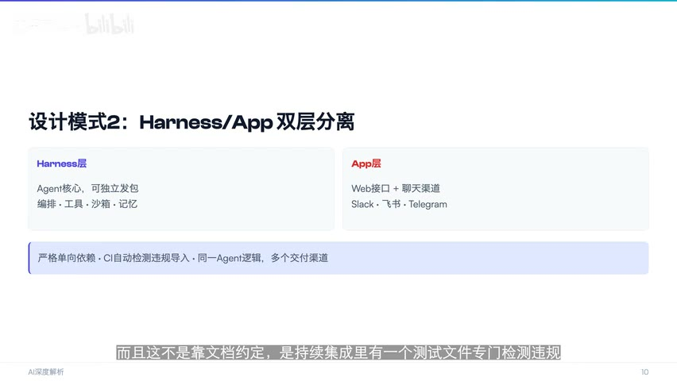

原视频 · 在线回看
点击后联网加载 B 站播放器；本地不下载整段视频。

原视频 · 在线回看
点击后联网加载 B 站播放器；本地不下载整段视频。
来源：字节DeerFlow2.0拆解：5万星背后，单Agent为什么打败了多Agent
UP 主：AI深度幻觉 · 11 分 32 秒 · 深度阅读
链接：https://www.bilibili.com/video/BV1ja95BKE6J/
我们想让一个助手完成资料研究，最容易想到的组织方式，是模仿一个有明确分工的小团队：协调者接收需求，规划者列出步骤，研究者查资料，最后交给另一个角色写报告。每个角色负责一段，看起来清楚，也方便单独改进。但如果用户突然要的是一个仪表盘，或者一条数据处理流程，原先为“查资料并写报告”安排的接力顺序，就未必适用了。
DeerFlow 从早期研究流程到 2.0 的变化，可以沿着这个问题理解：系统怎样既保留必要分工，又能根据任务改变工作方式？架构重点转向一个掌握整体任务的主 Agent，它按需要调用工具，也能临时派出子任务，完成后再收回结果。主线由同一个负责人保持，分出去的工作则随当前需要变化。
Agent 可以理解为一个能够反复观察、决定和行动的模型系统。模型根据当前问题与已经获得的信息，决定下一步调用什么工具；程序执行工具，把结果交回；模型再看结果，决定继续行动还是回答用户。这个循环需要管理工具、状态和运行环境。围绕模型搭建这些支持设施，常用 Harness 这个词来描述。
框架通常提供可组合的部件，开发者决定怎样连接；运行环境则承担实际执行时需要的设施，例如文件操作环境、任务状态、记忆和子任务管理。两者的边界可以重叠，因此不必把名称当成严格分类。对 DeerFlow 2.0，更值得关心的是，哪些工作已经由它负责，哪些仍需要应用开发者安排。
在主管式结构中，用户的目标先交给 lead agent，也就是主 Agent。遇到适合拆开的工作时，主 Agent 通过 task 工具派出子任务。子 Agent 拥有自己的推理和工具调用循环，也管理本次子任务的局部状态；完成工作后，把结果交给主 Agent。主 Agent 再结合其他信息判断下一步，最终对整体任务负责。
这里有三个组织特点。子 Agent 的工作由主 Agent 发起，它们之间不自由互相派活；子任务围绕当前需要建立，完成后结束；整体决策仍由主 Agent 掌握。我们可以把它理解为一个主管临时找几位承包者完成不同工作，承包者各自交付，主管负责检查这些交付能否接成最后的结果。
有子 Agent，就已经包含多个独立执行者，所以“一个主管加临时子 Agent”仍可以归入层级式多 Agent 系统。把它说成“单 Agent”，通常是在强调只有一条主决策线。区分这个用法很重要，否则读到标题时容易误以为系统完全没有子 Agent。真正需要比较的是谁控制流程、谁保存状态、结果怎样交接，以及各执行者能否独立采取行动。
早期固定流程的优势是路径明确。研究任务总要经过规划、检索、成稿，就可以围绕这条路径安排每个角色。困难出现在任务形态变化以后：如果用户需要运行代码生成图表，或者要在查资料途中反复试验，就需要修改预先规定的节点和交接关系。角色名字还在，职责和顺序却可能不断变化，系统维护者要为这些变化付出成本。
主管式结构把部分流程选择交给主 Agent。它可以先使用工具做一小段工作，确认需要后再拆任务，也可以收到子任务结果后继续追问。这样更灵活，但并没有消除协调责任。主 Agent 仍然要把任务说清楚，决定哪些上下文应该传给子 Agent，并检查返回结果是否真的完成了要求。如果主管自己误解目标，临时分派也会沿着同样的错误方向进行。
| 组织方式 | 谁决定工作顺序 | 需要特别处理的困难 |
|---|---|---|
| 固定角色流水线 | 预先设计的节点和连接 | 新任务不符合旧流程时，需要修改交接关系 |
| 主 Agent 加临时子任务 | 主 Agent 根据进展决定 | 子任务输入是否充分，结果能否可靠合并 |
| 多个执行者自由协作 | 多方协商和相互触发 | 冲突、重复工作、共享状态和停止条件 |
多 Agent 系统常见的损耗就发生在交接处。主 Agent 知道用户的一项限制，却没有把它传给子 Agent，子任务就可能做出局部合理、整体不合用的结果。不同执行者也可能用不同格式或假设处理同一件事，最后需要额外整理。执行者越多，潜在的沟通关系也越多；并行节省的时间，可能被等待、重复工作和合并错误抵消。
有关失败分析和架构比较的研究，因此值得关注。但小规模个人实验的成功率，不能直接代表所有任务；不同研究的任务、模型和失败定义也可能不同。某次实验里单 Agent 表现更好，说明那组条件下增加协作没有带来足够收益。它没有证明所有分工都会失败，更无法证明未来不再需要多 Agent。对这一类结果，理解失败发生在哪里，比记住一个看起来惊人的百分比更有用。
DeerFlow 2.0 的一个设计重点，是在模型调用前后设置中间件。可以把中间件理解为沿着执行路径安排的几个检查和处理步骤：模型调用前准备上下文，调用后检查返回内容，还可以记录消耗、处理记忆或限制子任务数量。这样，一项通用规则有明确的执行位置，不必散落在每个业务功能里。
子任务数量限制是一个具体例子。录制时所讨论的实现，对同时派出的任务设置上限；当模型返回超过允许数量的子任务调用时，程序在调用后的处理环节限制实际执行数量。这个设计关注的是最终会发生多少次调用。即使模型没有遵守提示里的数量要求，程序仍然可以阻止超额任务进入执行阶段。
这种区别对于理解 Agent 很重要。提示词告诉模型应该怎样行动，执行层控制系统实际允许发生什么。两者可以配合，但不能把提示中的一句约束当成已经实施的资源控制。并发上限、超时等具体数值是版本和配置的一部分，理解这个机制不需要把录制时的数值当作所有部署都相同的规则。
第二个设计重点，是 Harness 与 App 分层。Harness 负责 Agent 的执行核心，例如工具、沙箱、记忆和任务编排；App 负责用户怎么接入，例如网页接口或不同聊天渠道。应用可以调用执行核心，执行核心不反过来依赖某一个具体界面。这样更换用户入口时，核心任务逻辑有机会继续复用。
设想同一套研究能力，既要供网页使用，也要接入一个聊天软件。如果执行逻辑到处依赖网页层的对象，增加新入口就可能需要复制代码，或者把界面相关内容也一起带过去。依赖方向保持清楚后，不同入口只需把请求交给共同的核心，再把结果显示给用户。这个例子要说明的是分层的作用，并不意味着两个入口天然拥有完全相同的权限和交互方式。
分层约定还需要被检查。代码通过持续集成测试检测不合规的导入关系，避免某次修改让核心重新依赖应用层。持续集成可以先理解为代码变更后自动运行的一组检查。这里的检查目标很具体：保护已经约定的依赖方向，使以后复用核心时不必不断处理界面耦合。DeerFlow 后端架构说明
第三个设计是任务环境里的虚拟路径。Agent 看到一个稳定的工作目录，宿主机上实际保存文件的位置可以不同；命令输出中出现的某些实际路径，还可以转换回任务使用的虚拟路径。这样，模型不必随着部署位置变化去理解不同机器的目录结构，任务环境也能减少直接暴露宿主路径的情况。
不过，路径显示和操作权限需要分开理解。把一个真实目录换成另一个名字，并没有自动限制程序能读取哪些文件。实际安全边界还取决于文件挂载、访问权限和网络规则等设置。虚拟路径帮助提供一致的任务视图，真正阻止越权需要执行环境配合。否则，模型看到的名字很整齐，后台进程依然可能访问不该访问的资源。
第四个设计是用 Markdown 文件描述技能。技能文件包含说明和元信息，告诉 Agent 怎样处理某类任务。渐进式加载的重点，是先保留找到相关技能所需的信息，实际需要时再读更完整的内容。模型每次能处理的上下文有容量限制，如果把所有技能全文一次放进去，即使当前只用到其中一种，也会占据大量空间。
按需加载并不保证模型总能选对技能，但它改变了系统需要管理的问题：先让模型知道有什么能力可用，再把相关能力的细节提供出来。这与前面控制工具选择范围的思路相近。用户当前的任务决定需要哪些信息，无关的详细说明可以暂时留在文件里，不必每一轮都跟着模型走。
一个系统能完成演示任务，与它能长时间稳定服务，是不同层次的问题。录制时对 DeerFlow 的讨论提出了限流、长任务中断恢复、并发实际是否发生，以及配置文档等方面的顾虑。这些属于当时所讨论版本的工程状态，不能永久当作项目现状。不过，它们背后的问题不会因为架构图清楚就自动消失。
例如，外部模型接口可能限制请求频率，系统需要知道遇到限制后怎样等待或恢复；长任务进行到一半中断，已经获得的资料和状态能否继续使用，会影响用户是否必须从头等待。代码允许多个子任务同时运行，也不代表模型每次都会同时派出多个独立任务。允许并发、实际调度并发，以及并发带来收益，需要分别观察。
研究任务还要区分不同的结果质量。引用准确，意味着引用与它支持的说法相符；信息覆盖充分，则意味着用户关心的重要方面都得到了处理。一份报告可以把少数观点引用得很准确，却遗漏其他必要内容。因此，某个引用指标很高，并不能独自说明整篇研究已经完整。整体分数同样需要结合各项指标和测试条件理解。
关于“模型越强，是否越不需要多 Agent”，可以保留为一种有条件的判断。更强的长上下文理解和任务执行能力，确实可能让一个 Agent 承担过去需要拆分的工作；另一方面，独立任务并行、不同权限范围或不同组织负责的系统，仍然可能需要分工。模型能力变化会改变架构选择的理由，无法单凭一个项目的演进宣布所有场景都应采用同一结构。
DeerFlow 2.0 提供了一个值得理解的组合：主 Agent 保持任务主线，子 Agent 按需承担独立工作，执行层负责约束和支撑。中间件提供规则的执行位置，Harness 与 App 分离保护复用，虚拟路径整理任务环境，技能按需加载减少无关上下文。
把这套设计放回最初的研究任务，我们就能看到它想解决什么：需求变化时，工作顺序可以调整；需要分工时，结果仍由一个主线负责人检查和整合。它的价值取决于这些交接是否可靠，也取决于运行中断、权限和资源限制是否得到实际处理。
如果主 Agent 派出三个有独立推理循环的子 Agent，这个系统为什么仍然可以叫层级式多 Agent？说它只有一条主决策线，又是在强调什么？
一个子任务结果本身看起来很好，却不符合最终用户要求，问题可能发生在哪次交接？回想上下文、输入条件和结果合并各自承担的责任。
为什么隐藏宿主机路径、在提示里限制子任务数，都不能单独构成可靠的执行约束？把“模型看见什么”和“程序允许什么”分开，就比较容易回答。